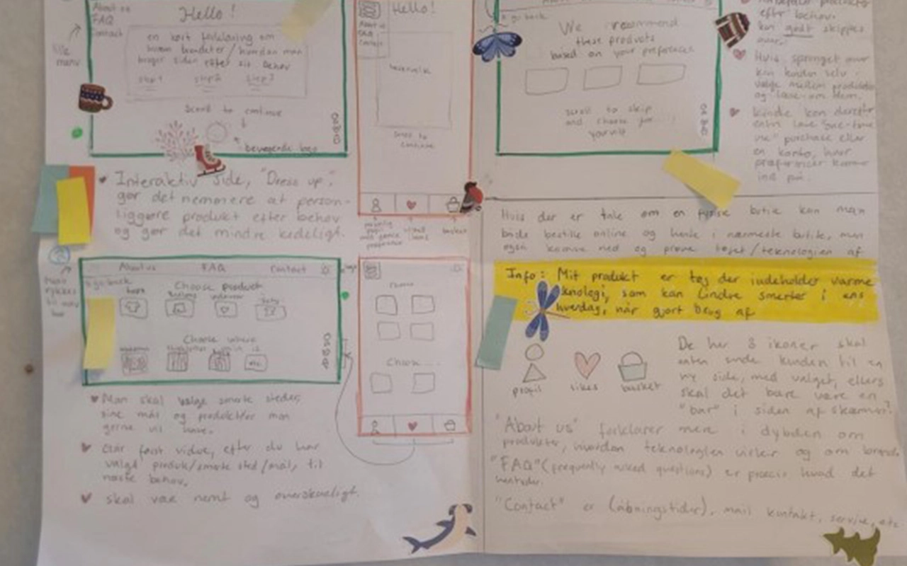
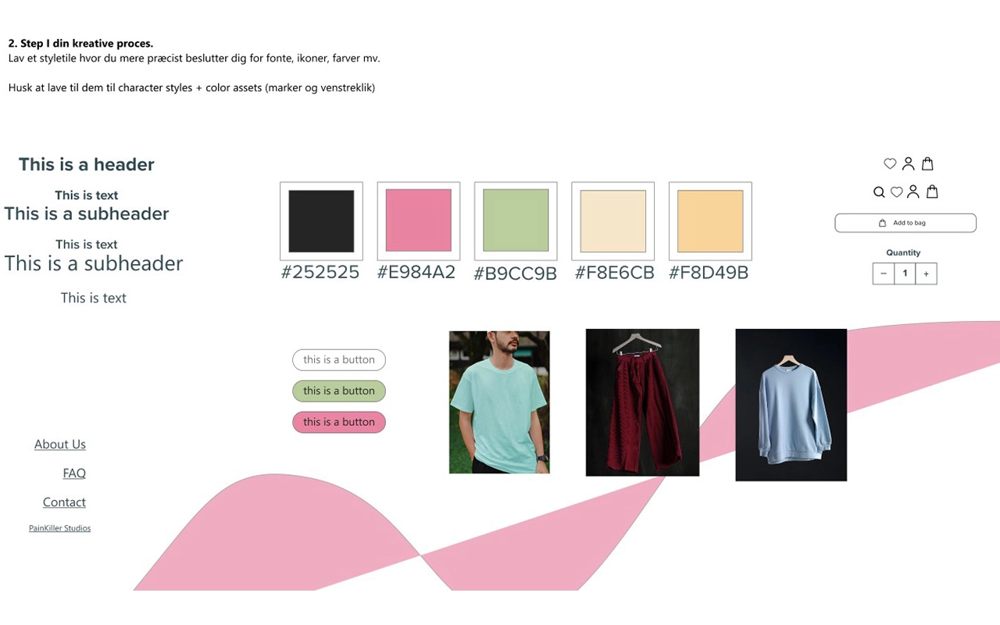

Tema 3
I dette tema fik jeg en grundlæggende forståelse for samspillet mellem brugere ogbrugergrænseflader, samt hvilke teorier, værktøjer og metoder du kan benytte til research, designog test i en digital produktudvikling.
Løsning 03.02.02
Her arbejdede jeg med min første prototype.
Jeg startede ud med at arbejde med en simpel prototype i XD, som med tiden blev mere udarbejdet med fokus på interaktion, fotostil og copy.
Desuden lavede jeg også moodboard og styletyle.


Opgaveløsning
Pitch 03.03.02
Til mit pitch var jeg der ikke fysisk i skole, men jeg lavede en video der svarede til længden af den præsentation jeg skulle havde lavet originalt.
Pitchen skulle indholde alt fra første ideer til købsflow, til test af prototypen og slut produktet.
Jeg fik desværre aldrig feedback på mit pitch.
Refleksioner
User Experience forløbet var meget anderledes fra vores første forløb omkring Web. Her havde vi intet med kode af gøre, hvilket var lidt rart at få en pause fra.
Her havde vi meget fokus på at lærer ADOBE programmer at kende. Jeg fik brugt lidt mere af min kreative side her og der var
ret meget fokus på at komme fra ide-generrering til prototype.
Jeg fik virkelig meget ud af forløbet, da en kæmpe del af at være Multimediedesiger, handler om at designe (haha), og om at få ideer til liv.
Jeg gjorde meget brug af Gestaltlove i dette forløb, og kunne mærke en eksponentiel personlig udvikling fra Web- til UX forløbet